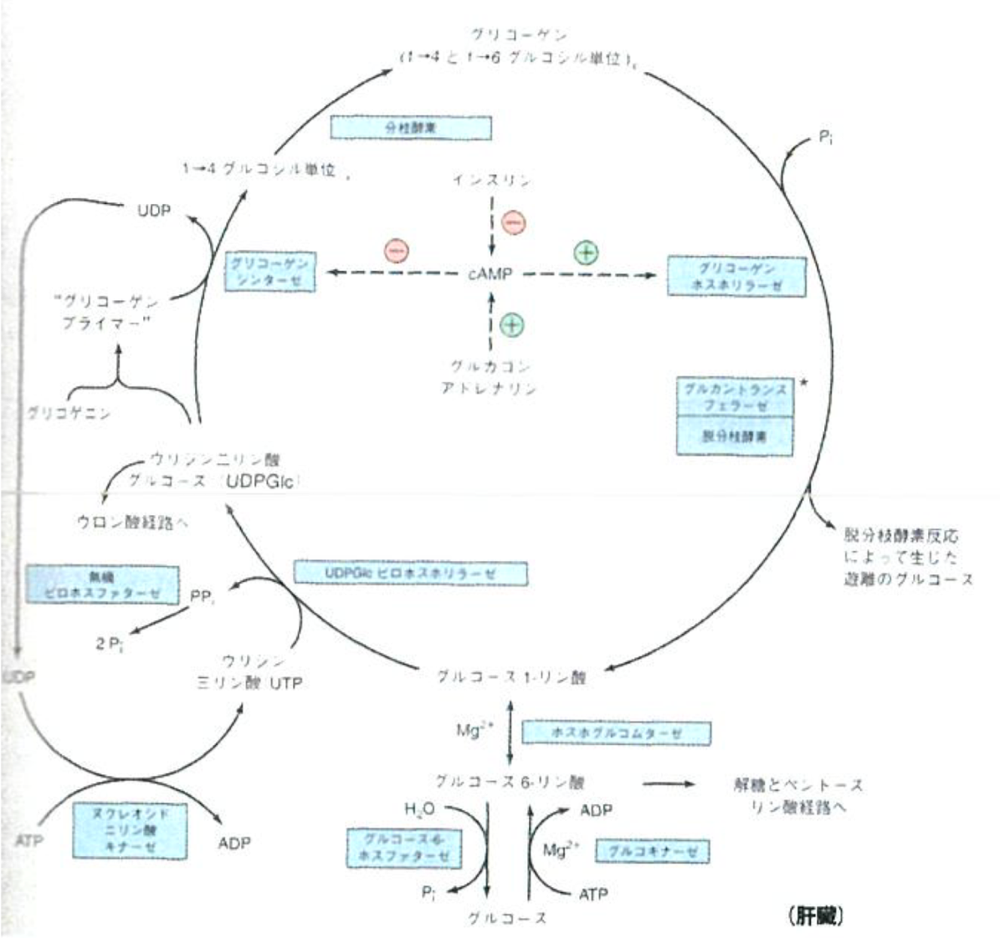
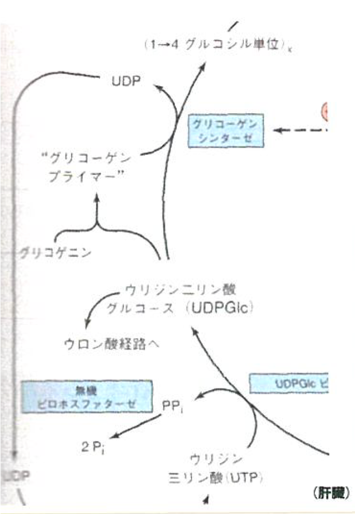
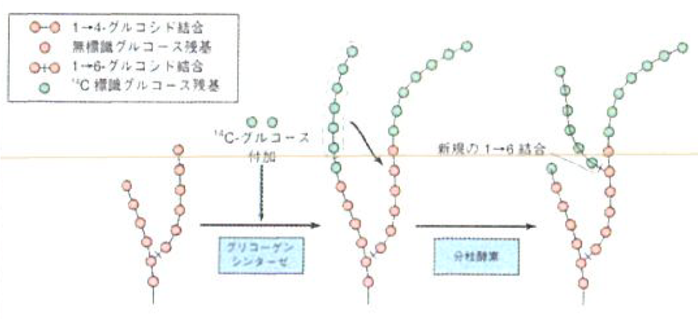
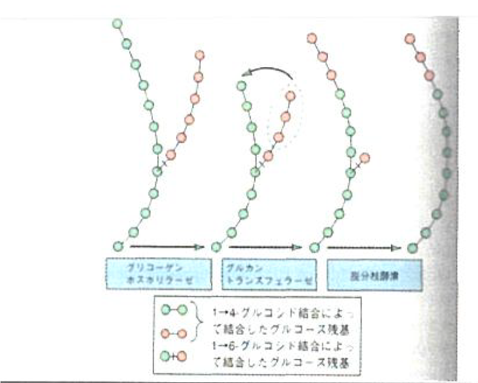
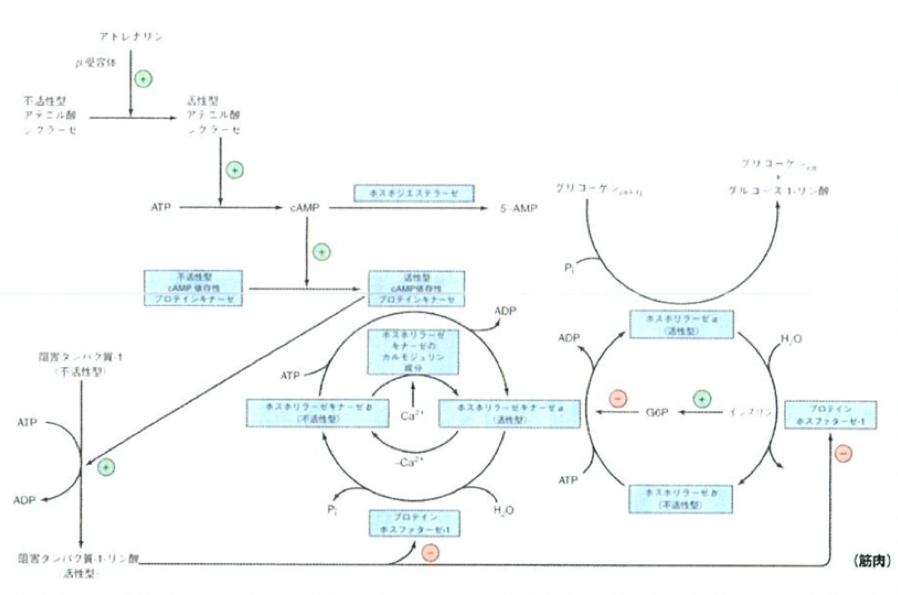
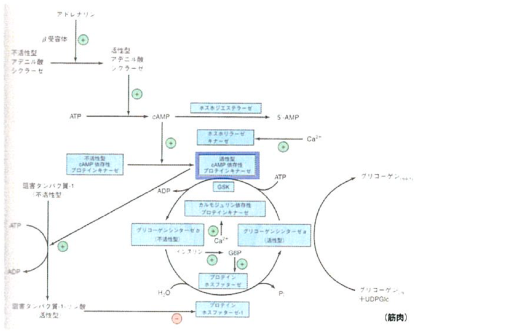
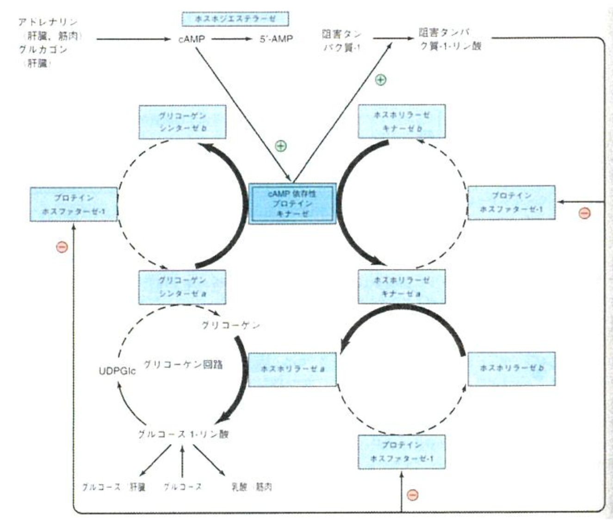
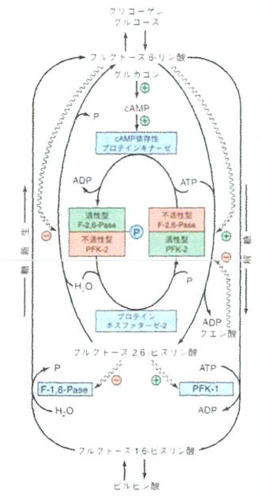

第12回 2019/7/12
- 講師：谷内江 望
- 教科書：イラストレイテッド ハーパー・生化学
- 教科書：ヴォート生化学
グリコーゲン代謝
- グリコーゲンプライマーを中心にα-D-グルコースが枝分かれしながら連なった重合体
- グリコーゲンは、主として肝臓と筋肉に貯蔵される。
- 含量としては肝臓の方が多いが、筋肉の重量は肝臓よりもかなり多い。
| 70kgの人の糖質貯蔵 | 組織含量(%) | 組織の重量 | 体内含量 |
|---|---|---|---|
| 肝臓グリコーゲン | 5.0 | 1.8kg | 90g |
| 筋肉グリコーゲン | 0.7 | 33kg | 245g |
| 細胞外のグルコース | 0.1 | 10L | 10g |

- グルコース→グルコース6-リン酸→解糖系
- グルコース6-リン酸→グルコース-1リン酸→グリコーゲン
グリコーゲン合成
| 経路 | グリコーゲン |
|---|---|
|  |  |
- グリコーゲンシンセターゼ
- 解糖の場合と同様に、グルコースはリン酸化されてグルコース6-リン酸になる。
- 筋肉：ヘキソキナーゼが触媒
- 肝臓：グルコキナーゼが触媒
- 酵素反応速度論的にはグルコキナーゼの方が圧倒的に遅いので、肝臓がグルコースの濃度を検知できるようになっている。
- ホスホグルコムターゼがグルコース1-リン酸を作る。
- グルコース1-リン酸は、UTPと反応（融合）し、UDPGlcを作る。
- グリコーゲンが全くないときは、これとグリコゲニンとが反応してグリコーゲンプライマーを作る。
- 一度グリコーゲンプライマーができると、グリコーゲンプライマー、あるいは伸長しているグリコーゲンと反応し、1-4グリコシド結合（グリコーゲンプライマーから一方向に伸びる）によって長くなる。
- ある一定の長さ（少なくともグルコース11残基）まで1-4グリコシド結合が伸長すると、グリコーゲンシンセターゼが伸長した部分をランダムに認識（長いもの程認識されやすい）し、1-4鎖の一部（少なくとも6残基分）を隣接するグリコーゲンに移転させ、1-6グルコシド結合を形成させて分枝を作る。
グリコーゲン分解
| 経路 | グリコーゲン |
|---|---|
 |
 |
- グリコーゲンホスホリラーゼ
- （無機リン酸を加えて）1-4グルコシド結合を切断する。
- 1-6グルコシド結合を加水分解する。（脱分枝酵素）
カーボローディング
- 生成： グリコーゲンを使い切った後に高糖質食を一気に食べると、グリコーゲンが高速に生成される。すると、1-4グルコシド結合の形成が急速になり、1-6グルコシド結合が少なくなる。（枝分かれ構造が少なくなる。）
- 分解： グリコーゲンの分解は、末端から行われる。すると、上記のような分枝構造の少ないグリコーゲンからは、少しずつ、時間的に長くグルコースが生成されることになる。
- 疑問：一度分枝構造の少ないグリコーゲンができた後に、酵素が働いで枝分かれ構造ができる、といったことは起きないの？？ →おそらく起きない。一度大きなグリコーゲンができると塊になってしまい、酵素がアクセスできない？？
アロステリック機構
グリコーゲンシンターゼとグリコーゲンホスホリラーゼが受ける調節（ここではcAMPを取り上げるが、色々な酵素が関わっている。）
- 基本的な流れは、「cAMP増加↑→リン酸化増加↑→グリコーゲンホスホリラーゼ（分解）の活性上昇↑ and グリコーゲンシンセターゼ（合成）の活性低下↓」
- インスリン： cAMPの加水分解を行うホスホジエステラーゼの活性を上昇させる→分解の活性低下 and 合成の活性上昇
- アドレナリン： cAMPをATPから作るアデニル酸シクラーゼとホルモン応答をして活性化→分解の活性上昇 and 合成の活性低下
グルコースホスホリラーゼ
※キナーゼ：基本的にはリン酸基を付けてタンパク質の機能をONにする（活性化）

※ このパスウェイは大事。流れを理解しておいた方が良い。
グルコースシンターゼ
以下の活性型cAMP依存性プロテインキナーゼは、キナーゼではあるが、グリコーゲンシンターゼを活性型から不活性型にしている。

cAMPによるグリコーゲン合成・分解調節の統合

糖新生と血糖の調節
グルコースあるいはグリコーゲンをどのようにしてタンパク質・アミノ酸から作って溜め込むか？
ポイント：全ての代謝パスはクエン酸回路に通づる。
- 解糖系のパスウェイはほとんどが可逆的なので、遡れそうだが、ATPを消費する部分では逆向きの反応が起こらない。
- エノール型のピルビン酸がケト型のピルビン酸に変わる反応が不可逆反応であったように、解糖系の単純な逆行は、熱力学的障壁によって妨げられている。
- したがって、不可逆なパスウェイを全て迂回しなければならない。
- 「オキサロ酢酸→ピルビン酸」ができないので、「オキサロ酢酸→リンゴ酸(NADH1分子消費)、リンゴ酸シャトルを通してミトコンドリアの細胞膜から外に出る、再びオキサロ酢酸に戻る。」というパスウェイが必要。（これによってミトコンドリアの外に出る。）
- 腎臓や肝臓にはGTP依存型のホスホエノールピルビン酸カルボキシキナーゼがあるので、上記のオキサロ酢酸をホスホエノールピルビン酸にする。
- その後、解糖系の経路を可逆的に上に戻る。
- フルクトース1,6-ビスリン酸からフルクトース6-リン酸を作るのは、フルクトース1,6-ビスホスファターゼが触媒しているが、この酵素は様々な場所からアロステリック制御を受ける。
- 解糖系と糖新生は同じ経路を用いる逆向きの反応であり、両者は相反して調節されるが、糖質代謝に関与する酵素の活性調節は色々ある。
- 酵素(タンパク質)合成速度の変化（数時間：ゲノムDNA→RNA→タンパク質→folding→機能を持つ）
- 可逆的リン酸化による共有結合修飾（速やか）
- アロステリック効果（瞬時）
肝臓におけるフルクトース2,6-ビスリン酸の独自の役割（解糖と糖新生の調節）

- ホスファターゼ：リン酸基を外す。
- キナーゼ：リン酸基を付与する。
- 糖新生では「ピルビン酸→フルクトース1,6-ビスリン酸→フルクトース6-リン酸」というパスウェイで、解糖系だとその逆である。
- PFK-2/F-2,6-Paseという二重酵素は、どちらかが活性型の時にどちらかが不活性型であり、それらはリン酸化を通じて制御されている。
- グルコース供給が豊富な時:
- フルクトース2,6-ビスリン酸の濃度が上昇
- ホスホフルクトキナーゼ-1が活性化
- フルクトース-2,6-ビスホスファターゼは阻害
- 解糖が促進
- 空腹時：
- グルカゴン→cAMPの賛成が増加
- プロテインキナーゼがPFK-2/F-2,6,-Paseをリン酸化
- PFK-2活性を阻害
- F-2,6-Pase活性を活性化
- フルクトース2,6-ビスリン酸の濃度低下
- PFK-1が不活性化
- F-1,6-ビスホスファターゼの阻害が減る
- 糖新生が活性化
食後の血糖値の調節にはグルコキナーゼが重要である
- ヘキソキナーゼは、グルコースに対して低い \(\mathrm{K_m}\) を持つため、基質グルコースは通常の状態において飽和状態にあり、酵素は一定速度で働いている。
- グルコキナーゼは、グルコースに対してかなり高い \(\mathrm{K_m}\) を持つため、活性は（肝門脈における）グルコース濃度の上昇に伴って増加する。
インスリンは血糖調節において中心的役割を果たす
高血糖は肝臓へのグルコースの取り込みに直接的に影響するが、インスリンは血糖値の調節において中心的な役割を果たす。
- 高血糖に応答して膵臓のランゲルハンス島β細胞から分泌される。
- β細胞はGLUT2輸送体を介してグルコースを自由に通過される。
- 通過したグルコースはグルコキナーゼによってリン酸化
- 解糖、クエン酸回路、ATP産生
- [ATP]の上昇→ATP感受性 \(\mathrm{K^+}\) チャネルを阻害
- 細胞膜の脱分極
- 電位感受性 \(\mathrm{Ca^{2+}}\) チャネルを介して \(\mathrm{Ca^{2+}}\) が流入
- インスリンの開口放出が引き起こされる。
小テスト
| # | 問題 | 答 |
|---|---|---|
| 1 | 生体における筋肉のグリコーゲン及び肝臓のグリコーゲンの役割の違いについて述べよ。 | 筋肉のグリコーゲンは、運動したい時に速やかにエネルギー供給したいので、「筋肉内の解糖に必要なグルコース1-リン酸を速やかに供給するための貯蔵庫」として働いており、一方の肝臓のグリコーゲンは、「食間においてグリコーゲンとして貯蔵したグルコースを放出することで血糖を維持する」ように働く。 |
| 2 | 持久力の必要な運動選手にとって、極度に疲労する運動を行ってから高糖質食を摂取する「カーボローディング」は良いとされている。合理的な理由について説明せよ。 | 運動して体内のエネルギーをなくした状態で大量のグルコースを急速に体内に入れると、グリコーゲンの合成が速くなる。すると、1,4-グリコシド結合の速度が上がり、確率的に起こる1,6-グリコシド結合が相対的に少なくなり、枝分かれ構造の少ないグリコーゲンになる。グリコーゲンの消費は末端部分から起こるので、上記のように作られた分枝の少ないグリコーゲンであれば、長期的にエネルギーを供給することができるから。 |
| 3 | グリコーゲン合成においてプロテインフォスファターゼ-1はどのように作用するか述べよ。 | グリコーゲンシンターゼは、リン酸基が付いているときに不活性型である。ここで、プロテインフォスファターゼ-1がこのリン酸基を取り除くと、グリコーゲンシンターゼが活性型になるので、グリコーゲンの合成が起こる。 |
| 4 | 糖新生において、解糖におけるヘキソキナーゼ（グルコキナーゼ）、ホスホフルクトキナーゼ、ピルビン酸キナーゼの不可逆反応はどのように迂回されているか。それぞれ答えよ。必要であれば図を用いても良い。 | オキサロ酢酸を一度可逆的にリンゴ酸に変換したのち、リンゴ酸シャトルを通ってミトコンドリアの外に移動する。その後、再び可逆的な反応によってオキサロ酢酸に戻ったのち、ホスホエノールピルビン酸カルボキシキナーゼによってホスホエノールピルビン酸にし、ピルビン酸キナーゼでピルビン酸を生成する。 |
| 5 | フルクトース6-リン酸からフルクトース1,6-ビスリン酸が生成する解糖経路およびその逆の糖新生経路は、フルクトース6-リン酸のアロステリック作用によって調節されている。この調節についてフルクトース6-リン酸からフルクトース2,6-ビスリン酸を生成する二重酵素名およびフルクトース2,6-ビスリン酸が作用する酵素名を２つ全て挙げて説明せよ。必要であれば図を用いても良い。 | 二重酵素のどちら（F-2,6-Pase, PFK-2）が活性型か、が「プロテインキナーゼ/プロテインホスファターゼ-2」のどちらを作るかを決め、フルクトース2,6-ビスリン酸はPFK-1に+, F-1,6-Paseに- に作用するため、フルクトース2,6-ビスリン酸が多いと解糖のパスウェイを活性化する。この作用によって、よりアロステリックな制御を実現する。ATPの量も覚えておくと良い。 |